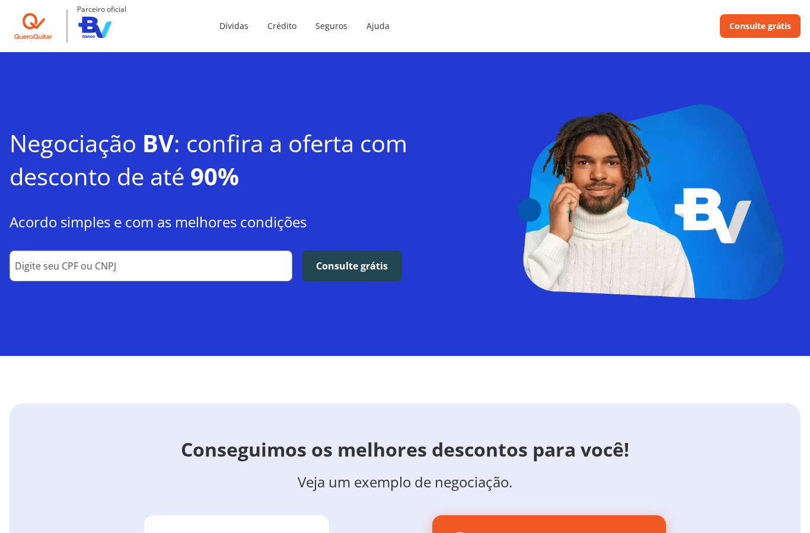
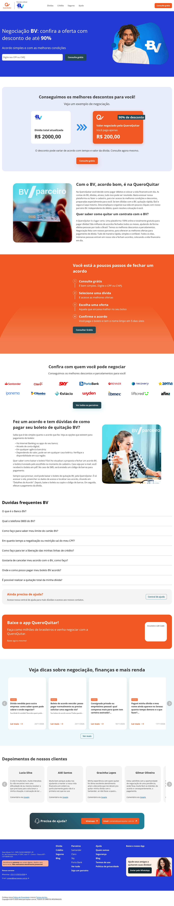

Sistema de Investigação de Marca e Identidade Online
https://www.queroquitar.com.br/bv/
Prioridade: MEDIUM · Cenário: B_AMBIGUOUS_COMMUNICATION · Revisão humana: PENDING
A QueroQuitar é um correspondente bancário confirmado operando em ambiente multibancos/renegociação de dívidas. Embora identifique claramente seus dados empresariais e distinga seu papel da instituição financeira, a landing page dedicada utiliza o selo 'Parceiro oficial' com o logotipo moderno do Banco BV sem exibir a declaração mandatória de correspondente bancário e ouvidoria exigida pela Resolução CMN nº 4.935/2021, configurando comunicação ambígua que requer revisão de conformidade regulatória. [Revisor: CONFIRM] Confirma-se a classificação REVIEW_REQUIRED. Trata-se de um correspondente bancário confirmado (QueroQuitar S.A., CNPJ 54.042.668/0001-20) atuando na renegociação de dívidas. A página utiliza a chancela 'Parceiro oficial' acompanhada do logotipo do Banco BV, porém omite a declaração explícita de correspondente bancário e a informação de contato da Ouvidoria da instituição financeira, em desacordo com as exigências de transparência da Resolução CMN nº 4.935/2021.


| Ref | Tipo | Local | Conteúdo |
|---|---|---|---|
| E-URL | domain | url | URL final: https://www.queroquitar.com.br/bv/ (domínio: www.queroquitar.com.br) |
| E-DISC-001 | text | search_index | Índice de busca (grounding): queroquitar.com.br — **URL:** `https://queroquitar.com.br` | **Expressão utilizada:** *"Parceiro oficial"* acompanhado do logotipo oficial do BV | **Como utiliza a marca:** Página promocional para renegociação de dívidas com desconto e originação de *"Empréstimo com Garantia de Veículo BV"*, exibindo o selo de *parceiro oficial* com logotipo do banco | Informa dados da plataforma intermediadora no rodapé corporativo, mas utiliza o selo visual de oficialidade em posição de maior destaque que a própria marca intermediadora |
| E-DISC-002 | text | search_index | Índice de busca (serper): Negociação BV: confira a oferta com desconto de até 90% — Sempre que precisar, você pode baixar o boleto de quitação BV, pela QueroQuitar. É só acessar o site, preencher os dados de acesso e localizar seu acordo, ... |
| E-SHOT-VIEWPORT | screenshot | viewport | evidence/C47793e196f/attempt-1/viewport.png (sha256 430b5a303d48dfd3…) |
| E-SHOT-FULL | screenshot | page | evidence/C47793e196f/attempt-1/fullpage.png (sha256 92881b63fdc4e606…) |
| E-TITLE | title | head | Negociação BV: confira a oferta com desconto de até 90% |
| E-HEAD-1 | heading | page | Negociação BV: confira a oferta com desconto de até 90% |
| E-HEAD-2 | heading | page | Acordo simples e com as melhores condições |
| E-HEAD-3 | heading | page | Conseguimos os melhores descontos para você! |
| E-HEAD-4 | heading | page | Dívida total atualizada |
| E-HEAD-5 | heading | page | Valor negociado pela QueroQuitar |
| E-HEAD-6 | heading | page | Com o BV, acordo bom, é na QueroQuitar |
| E-HEAD-7 | heading | page | Quer saber como quitar um contrato com o BV? |
| E-HEAD-8 | heading | page | Você está a poucos passos de fechar um acordo |
| E-HEAD-9 | heading | page | Consulte grátis |
| E-HEAD-10 | heading | page | Selecione uma dívida |
| E-HEAD-11 | heading | page | Escolha uma oferta |
| E-HEAD-12 | heading | page | Confirme o acordo |
| E-HEAD-13 | heading | page | Confira com quem você pode negociar |
| E-HEAD-14 | heading | page | Fez um acordo e tem dúvidas de como pagar seu boleto de quitação BV? |
| E-HEAD-15 | heading | page | Duvidas frequentes BV |
| E-HDR | text | header | Parceiro oficial Dívidas Crédito Seguros Ajuda Consulte grátis |
| E-FOLD | text | viewport (acima da dobra) | Parceiro oficial Dívidas Crédito Seguros Ajuda Consulte grátis Negociação BV : confira a oferta com desconto de até 90% Acordo simples e com as melhores condições Consulte grátis Conseguimos os melhores descontos para você! Veja um exemplo de negociação. 90% de desconto |
| E-FTR | text | footer | QueroQuitar S.A - CNPJ: 54.042.668/0001-20 Av. dos Autonomistas, nº 2561, sala 17 – Centro – Osasco/SP – CEP 06090-020 Atendimento somente nos canais digitais, rápido e sem burocracias. Não realizamos atendimento presencial. Nossos contatos WhatsApp: +55 (11) 97670-0558 Email: contato@queroquitar.com.br Dívida Crédito Seguros Blog Parceiros Santander Claro Sky Porto Bank Ver tudo Seja um parceiro Ajuda Quem somos Segurança Blog Termos de uso Politica de privacidade Baixe o nosso App Ajude seus amigos a quitarem suas dívidas! Enviar pelo WhatsApp |
| E-NAV | nav | header | <https://www.queroquitar.com.br/> | <https://www.queroquitar.com.br/bv/> | Dívidas <https://www.queroquitar.com.br/> | Crédito <https://www.queroquitar.com.br/querocredito/> | Seguros <https://www.queroquitar.com.br/quero-seguros/> | Ajuda <https://www.queroquitar.com.br/ajuda/> | Consulte grátis <https://app.queroquitar.com.br/> |
| E-CTA-1 | cta | header | Consulte grátis <https://app.queroquitar.com.br/> |
| E-CTA-2 | cta | page | Consulte grátis |
| E-CTA-3 | cta | page | Consulte grátis <https://app.queroquitar.com.br/> |
| E-CTA-4 | cta | page | Consultar Grátis <https://app.queroquitar.com.br/> |
| E-CTA-5 | cta | page | Ver todos os parceiros <https://www.queroquitar.com.br/parceiros/> |
| E-CTA-6 | cta | page | Central de ajuda <https://www.queroquitar.com.br/ajuda> |
| E-CTA-7 | cta | page | Seta para ir para esquerda |
| E-CTA-8 | cta | page | Ler mais <https://www.queroquitar.com.br/querorenda/blog/dividas/como-pagar-uma-divida-que-foi-vendida/> |
| E-CTA-9 | cta | page | Ler mais <https://www.queroquitar.com.br/querorenda/blog/dividas/boleto-do-acordo-vencido%20/> |
| E-CTA-10 | cta | page | Ler mais <https://www.queroquitar.com.br/querorenda/blog/credito/consignado-privado-ou-emprestimo-pessoal%20/> |
| E-CTA-11 | cta | page | Ler mais <https://www.queroquitar.com.br/querorenda/blog/dividas/paguei-divida-nome-continua-serasa/> |
| E-CTA-12 | cta | page | Ler mais <https://www.queroquitar.com.br/querorenda/blog/organizacao/boletos-vencimento-20-novembro-2026-feriado/> |
| E-CTA-13 | cta | page | Ler mais <https://www.queroquitar.com.br/querorenda/blog/besni/divida-besni-fatura-atrasada-negociar-queroquitar/> |
| E-CTA-14 | cta | page | Ler mais <https://www.queroquitar.com.br/querorenda/blog/noticias/inss-novembro-2026-calendario-pagamentos/> |
| E-CTA-15 | cta | page | Ler mais <https://www.queroquitar.com.br/querorenda/blog/dividas/lei-superendividamento-como-pedir-ajuda-procon%20/> |
| E-CTA-16 | cta | page | Seta para ir para direita |
| E-CTA-17 | cta | page | Ver mais <https://www.queroquitar.com.br/blog/> |
| E-CTA-18 | cta | page | Seta para ir para esquerda |
| E-CTA-19 | cta | page | Seta para ir para direita |
| E-CTA-20 | cta | footer | Abrir QRCode |
| E-CONTACT-1 | contact | page | Whatsapp <https://wa.me/5511976700558?text=Ol%C3%A1%2C%20eu%20gostaria%20de%20negociar%20a%20minha%20d%C3%ADvida.%20O%20que%20preciso%20fazer%3F> |
| E-CONTACT-2 | contact | page | Email: contato@queroquitar.com.br <mailto:contato@queroquitar.com.br> |
| E-CONTACT-3 | contact | footer | +55 (11) 97670-0558 <https://wa.me/5511976700558?text=Ol%C3%A1%2C%20eu%20gostaria%20de%20negociar%20a%20minha%20d%C3%ADvida.%20O%20que%20preciso%20fazer%3F> |
| E-CONTACT-4 | contact | footer | contato@queroquitar.com.br <mailto:contato@queroquitar.com.br> |
| E-CONTACT-5 | contact | footer | Abrir Whatsapp web <https://wa.me/5511976700558?text=Ol%C3%A1%2C%20eu%20gostaria%20de%20negociar%20a%20minha%20d%C3%ADvida.%20O%20que%20preciso%20fazer%3F> |
| E-CONTACT-6 | contact | footer | <https://www.instagram.com/queroquitar/> |
| E-CONTACT-7 | contact | footer | <https://www.facebook.com/queroquitar> |
| E-CONTACT-8 | contact | footer | <https://wa.me/5511976700558?text=Ol%C3%A1%2C%20eu%20gostaria%20de%20negociar%20a%20minha%20d%C3%ADvida.%20O%20que%20preciso%20fazer%3F> |
| E-IMG-1 | image | header (acima da dobra) | imagem alt='Logo QueroQuitar' src=https://www.queroquitar.com.br/assets/images/QQ_vertical_P1-P.png (80x80, acima da dobra) |
| E-IMG-2 | image | header (acima da dobra) | imagem alt='Logo bv' src=https://www.queroquitar.com.br/assets/images/optimized/creditor-start/bv.png (200x40, acima da dobra) |
| E-IMG-3 | image | page (acima da dobra) | imagem alt='uma mulher feliz sorrindo usando o celular' src=https://www.queroquitar.com.br/assets/images/optimized/hero_lp-bv-tp.png (500x473, acima da dobra) |
| E-IMG-4 | image | page (acima da dobra) | imagem alt='Logo bv' src=https://www.queroquitar.com.br/assets/images/optimized/creditor-start/bv.png (200x40, acima da dobra) |
| E-IMG-5 | image | page (acima da dobra) | imagem alt='Logo Quero Quitar' src=https://www.queroquitar.com.br/assets/images/qq_icon.svg (56x41, acima da dobra) |
| E-IMG-6 | image | page | imagem alt='Logo santander' src=https://www.queroquitar.com.br/assets/images/optimized/creditor-center/santander.png (200x77, abaixo da dobra) |
| E-IMG-7 | image | page | imagem alt='Logo claro' src=https://www.queroquitar.com.br/assets/images/optimized/creditor-center/claro.png (200x77, abaixo da dobra) |
| E-IMG-8 | image | page | imagem alt='Logo sky' src=https://www.queroquitar.com.br/assets/images/optimized/creditor-center/sky.png (200x77, abaixo da dobra) |
| E-IMG-9 | image | page | imagem alt='Logo porto-seguro' src=https://www.queroquitar.com.br/assets/images/optimized/creditor-center/porto_seguro.png (200x77, abaixo da dobra) |
| E-IMG-10 | image | page | imagem alt='Logo renner' src=https://www.queroquitar.com.br/assets/images/optimized/creditor-center/renner.png (200x77, abaixo da dobra) |
| E-IMG-11 | image | page | imagem alt='Logo recovery' src=https://www.queroquitar.com.br/assets/images/optimized/creditor-center/recovery.png (200x77, abaixo da dobra) |
| E-IMG-12 | image | page | imagem alt='Logo zema' src=https://www.queroquitar.com.br/assets/images/optimized/creditor-center/zema.png (200x77, abaixo da dobra) |
| E-IMG-13 | image | page | imagem alt='Logo cea' src=https://www.queroquitar.com.br/assets/images/optimized/creditor-center/cea.png (200x77, abaixo da dobra) |
| E-IMG-14 | image | page | imagem alt='Logo btg' src=https://www.queroquitar.com.br/assets/images/optimized/creditor-center/btg.png (200x77, abaixo da dobra) |
| E-IMG-15 | image | page | imagem alt='Logo santander-empresas' src=https://www.queroquitar.com.br/assets/images/optimized/creditor-center/logo-santander-empresas-2.png (200x77, abaixo da dobra) |
| E-IMG-16 | image | page | imagem alt='Logo avenida' src=https://www.queroquitar.com.br/assets/images/optimized/creditor-center/avenida_principal.png (200x77, abaixo da dobra) |
| E-IMG-17 | image | page | imagem alt='Logo tricard' src=https://www.queroquitar.com.br/assets/images/optimized/creditor-center/tricard.png (200x77, abaixo da dobra) |
| E-IMG-18 | image | page | imagem alt='Logo cielo' src=https://www.queroquitar.com.br/assets/images/optimized/creditor-center/cielo.png (200x77, abaixo da dobra) |
| E-IMG-19 | image | page | imagem alt='Logo banco-pan' src=https://www.queroquitar.com.br/assets/images/optimized/creditor-center/pan.png (200x77, abaixo da dobra) |
| E-IMG-20 | image | page | imagem alt='Logo carrefour' src=https://www.queroquitar.com.br/assets/images/optimized/creditor-center/banco-carrefour.png (200x77, abaixo da dobra) |
| E-OFFICIAL-LINKS | link | page | https://www.bv.com.br/atendimento <https://www.bv.com.br/atendimento> |
| E-TXT-001 | text | page | Parceiro oficial |
| E-TXT-002 | text | page | Negociação BV: confira a oferta com desconto de até 90% |
| E-TXT-003 | text | page | Com o BV, acordo bom, é na QueroQuitar |
| E-TXT-004 | text | page | Na QueroQuitar você decide como pagar débitos e colocar a vida financeira em dia. As contas do BV, dívidas, atraso, tudo isso pode ser resolvido. Basta acessar nossa plataforma ou fazer o cadastro, para ter acesso às melhores condições e descontos, preparadas especialmente para você. Se tem dívidas com o BV, quitação rápida, fácil e segura é aqui mesmo. Descomplique e organize sua vida em poucos |
| E-TXT-005 | text | page | cliques com nosso parceiro BV. Independente do débito, quem resolve a situação é você. |
| E-TXT-006 | text | page | Quer saber como quitar um contrato com o BV? |
| E-TXT-007 | text | page | A QueroQuitar é o lugar certo. Uma plataforma 100% online e totalmente gratuita para pagar dívidas! São milhares de acordos fechados todos os meses, ajudando de forma efetiva pessoas por todo o Brasil. Temos os melhores descontos e parcelamentos. Negociação feita com nossos parceiros, para oferecer as melhores ofertas para pagamento de dívida. Tudo de maneira rápida, simples e confiável. Todos os |
| E-TXT-008 | text | page | É bem simples. Digite o CPF ou CNPJ. |
| E-TXT-009 | text | page | Você paga o boleto e tem o nome limpo em 5 dias úteis |
| E-TXT-010 | text | page | Ver todos os parceiros |
| E-TXT-011 | text | page | Fez um acordo e tem dúvidas de como pagar seu boleto de quitação BV? |
| E-TXT-012 | text | page | Saiba que é tão simples quanto o acordo que fez. Veja as opções que existem para pagamento do boleto: |
| E-TXT-013 | text | page | Via Internet Banking ou apps do seu banco; |
| E-TXT-014 | text | page | Quer saber como baixar o boleto? Fácil Ao visualizar a proposta e fechar um acordo BV, o boleto é enviado pelo escolhido no momento do cadastro. Caso seja por e-mail, você receberá o boleto em pdf. No caso de SMS, será enviado um código de barras para pagamento. |
| E-TXT-015 | text | page | Sempre que precisar, você pode baixar o boleto de quitação BV, pela QueroQuitar. É só acessar o site, preencher os dados de acesso e localizar seu acordo, clicando em “Detalhes do Acordo”. Depois, baixe o boleto ou copie o código de barras. Em seguida, efetue o pagamento da dívida. |
| E-TXT-016 | text | page | Duvidas frequentes BV |
| E-TXT-017 | text | page | O que é o Banco BV? |
| E-TXT-018 | text | page | O Banco BV é uma instituição financeira brasileira que viabiliza produtos financeiros para mais de 15 milhões de brasileiros e tem como objetivo simplificar o dia-a-dia das empresas, oferecendo soluções criativas de investimento. |
| E-TXT-019 | text | page | Qual o telefone 0800 do BV? |
| E-TXT-020 | text | page | Se você deseja contratar crédito e financiamento com o BV, pode entrar em contato pelos telefones: |
| E-TXT-021 | text | page | Como faço para saber meu limite do cartão BV? |
| E-TXT-022 | text | page | Para saber o limite do seu cartão BV, consulte no app “Meu Cartão BV”. Na tela principal, busque a opção “Limite Disponível” ou “Limite total”. |
| E-TXT-023 | text | page | Após o pagamento à vista ou da primeira parcela do acordo, o BV tem um prazo de 5 a 7 dias úteis para retirar o nome dos órgãos de proteção ao crédito. |
| E-TXT-024 | text | page | Após o pagamento da primeira parcela ou do acordo à vista, verifique com o próprio BV, qual o procedimento para a liberação. Para isso acesse o site do BV na área de atendimento: |
| E-TXT-025 | text | page | https://www.bv.com.br/atendimento |
| E-TXT-026 | text | page | Gostaria de cancelar meu acordo com o BV, como faço? |
| E-TXT-027 | text | page | Onde e como posso pagar meu boleto BV acordo? |
| E-TXT-028 | text | page | Na QueroQuitar é muito fácil pagar o seu boleto de acordo BV. Você pode: |
| E-TXT-029 | text | page | Via Internet Banking ou aplicativos do seu banco; |
| E-TXT-030 | text | page | Não se esqueça de ter o boleto em mãos. |
| E-TXT-031 | text | page | É possível realizar a quitação total da minha dívida? |
| E-TXT-032 | text | page | Sim, se a dívida do BV estiver conosco. Clique aqui , consulte se há alguma oferta disponível, selecione a melhor opção e feche o acordo. Depois pague os boletos que estarão disponíveis na área “Meus Acordos” do nosso site. Enviaremos também os boletos por SMS (código de barras) ou por e-mail (boleto). Tudo de maneira simples, rápida e confiável. Caso já tenha um acordo ativo e queira antecipar o |
| E-TXT-033 | text | page | Boleto do acordo vencido: posso pagar normalmente ou preciso solicitar uma segunda via? |
| E-TXT-034 | text | page | Seu boleto do acordo venceu? Saiba quando pedir segunda via, se é possível pagar atrasado e como evitar perder o desconto da negociação. |
| E-TXT-035 | text | page | Feriados de novembro de 2026: o que acontece com os boletos que vencem no dia 20? |
| E-TXT-036 | text | page | Boleto vence no feriado de 20 de novembro de 2026? Saiba quando pagar sem juros, o que muda nos bancos e quais contas exigem atenção. |
| E-TXT-037 | text | page | Dívida Besni atrasada? Saiba como consultar a fatura, pedir a segunda via e negociar pela QueroQuitar com descontos e parcelamentos disponíveis. |
| E-TXT-038 | text | page | Minha experiência com quero quitar foi ótima excelente atendimento amei o desconto que me deram pra quitar minha dívida com o Santander, se não fosse a quero quitar não sei como iria pagar a minha dívida, sou grata a vocês por terem me ajudado, recomendo, a quero quitar é nota 10. |
| E-TXT-039 | text | page | |
| E-TXT-040 | text | page | QueroQuitar S.A - CNPJ: 54.042.668/0001-20 |
| E-TXT-041 | text | page | Av. dos Autonomistas, nº 2561, sala 17 – Centro – Osasco/SP – CEP 06090-020 |
| E-TXT-042 | text | page | Atendimento somente nos canais digitais, rápido e sem burocracias. Não realizamos atendimento presencial. |
| E-TXT-043 | text | page | WhatsApp: |
| E-TXT-044 | text | page | Parceiros |
| E-TXT-045 | text | page | Seja um parceiro |
| E-TXT-046 | text | page | Enviar pelo WhatsApp |
| Dimensão | Sinal | Achado | Refs |
|---|---|---|---|
| VISUAL_IDENTITY | NEUTRAL | A página adota identidade visual mista com tons de azul alinhados à marca BV e elementos proprietários da QueroQuitar (logo laranja e layout característico). | E-SHOT-VIEWPORT E-SHOT-FULL E-IMG-1 |
| DECLARED_COMMERCIAL_IDENTITY | LEGITIMATE | Identificação empresarial completa e transparente no rodapé: QueroQuitar S.A., CNPJ 54.042.668/0001-20, endereço físico e canais próprios. | E-FTR E-TXT-040 E-TXT-041 |
| CORRESPONDENT_TRANSPARENCY | CONFUSION | Ausência do aviso regulatório explícito de correspondente bancário e ouvidoria, utilizando apenas a chancela comercial 'Parceiro oficial'. | E-HDR E-TXT-001 E-FTR |
| INSTITUTIONAL_LANGUAGE | LEGITIMATE | A redação diferencia a plataforma QueroQuitar do credor Banco BV ('Com o BV, acordo bom, é na QueroQuitar', 'nosso parceiro BV'). | E-TXT-003 E-TXT-005 E-TXT-007 |
| LOGO_USAGE | CONFUSION | Uso do logotipo atual do Banco BV no cabeçalho e na arte do hero banner sem a contextualização de conformidade regulatória. | E-IMG-2 E-IMG-4 E-SHOT-VIEWPORT |
| SERVICE_JOURNEY | NEUTRAL | Coleta de CPF/CNPJ para consulta e renegociação de dívidas, intermediando acordos diretamente na plataforma QueroQuitar. | E-FOLD E-TXT-008 E-CTA-1 |
| CONTACT_CHANNELS | LEGITIMATE | Canais de atendimento pertencem legitimamente à QueroQuitar, e há link direcionando para o canal oficial de atendimento do Banco BV. | E-CONTACT-1 E-CONTACT-2 E-OFFICIAL-LINKS E-TXT-025 |
| CONSUMER_CONFUSION | NEUTRAL | Apesar do destaque para 'Negociação BV' na URL e topo da página, a presença de múltiplos parceiros e a marca QueroQuitar reduzem o risco de impersonação direta. | E-HEAD-1 E-HEAD-13 E-IMG-6 E-IMG-19 |
A QueroQuitar é um correspondente bancário confirmado operando em ambiente multibancos/renegociação de dívidas. Embora identifique claramente seus dados empresariais e distinga seu papel da instituição financeira, a landing page dedicada utiliza o selo 'Parceiro oficial' com o logotipo moderno do Banco BV sem exibir a declaração mandatória de correspondente bancário e ouvidoria exigida pela Resolução CMN nº 4.935/2021, configurando comunicação ambígua que requer revisão de conformidade regulatória.
CNPJ 54.042.668/0001-20 observado na página consta do cadastro autorizado 'coban_registry_bv.csv (ref. 2026-10-06)'.
| Tipo | Valor | Ref | Contexto |
|---|---|---|---|
| domain | queroquitar.com.br | E-URL | |
| cnpj | 54.042.668/0001-20 | E-FTR | QueroQuitar S.A - CNPJ: 54.042.668/0001-20 |
| legal_name | QueroQuitar S.A | E-FTR | |
| contato@queroquitar.com.br | E-FTR | ||
| social_profile | https://www.instagram.com/queroquitar/ | E-CONTACT-6 | |
| social_profile | https://www.facebook.com/queroquitar | E-CONTACT-7 | |
| phone | (11) 97670-0558 | E-FTR | |
| Whatsapp <https://wa.me/5511976700558?text=Ol%C3%A1%2C%20eu%20gostaria%20de%20negociar%20a%20minha%20d%C3%ADvida.%20O%20que%20preciso%20fazer%3F> | E-CONTACT-1 | ||
| +55 (11) 97670-0558 <https://wa.me/5511976700558?text=Ol%C3%A1%2C%20eu%20gostaria%20de%20negociar%20a%20minha%20d%C3%ADvida.%20O%20que%20preciso%20fazer%3F> | E-CONTACT-3 | ||
| Abrir Whatsapp web <https://wa.me/5511976700558?text=Ol%C3%A1%2C%20eu%20gostaria%20de%20negociar%20a%20minha%20d%C3%ADvida.%20O%20que%20preciso%20fazer%3F> | E-CONTACT-5 | ||
| <https://wa.me/5511976700558?text=Ol%C3%A1%2C%20eu%20gostaria%20de%20negociar%20a%20minha%20d%C3%ADvida.%20O%20que%20preciso%20fazer%3F> | E-CONTACT-8 | ||
| partnership_declaration | Parceiro oficial | E-DISC-001 | **Expressão utilizada:** *"Parceiro oficial"* acompanhado do logotipo oficial do BV |
| partnership_declaration | parceiro | E-TXT-005 | cliques com nosso parceiro BV. |
Mapeamento indicativo para apoio à auditoria. Não constitui conclusão regulatória; a decisão definitiva pertence à auditoria.
Fonte: NORMATIVE
Art. 14. O contrato de correspondente deve estabelecer: [...] II - vedação à utilização, pelo contratado, de logomarca ou de outros atributos que sejam similares aos adotados pela instituição contratante em suas agências, postos de atendimento, sítio eletrônico na internet, aplicativo ou outras plataformas de comunicação em rede;
Hipótese: Uso de logomarca, uso excessivo/desproporcional ou de atributos similares aos adotados pela contratante em seus canais
Evidência observada: E-IMG-2 E-IMG-4 E-SHOT-FULL E-SHOT-VIEWPORT
Informação faltante:
Fonte: NORMATIVE
Art. 14. O contrato de correspondente deve estabelecer: [...] III - divulgação ao público, pelo contratado, de sua condição de prestador de serviços à instituição contratante, identificada pelo nome com que é conhecida no mercado, com descrição dos produtos e serviços oferecidos e canais de contato da instituição contratante, inclusive de sua ouvidoria, em local visível, em destaque e em formato legível, por meio de: a) sítio eletrônico do correspondente na internet, acessível na página inicial; b) aplicativo e outras plataformas de comunicação em rede do correspondente; [...]
Hipótese: Divulgação ao público da condição de prestador de serviços/parceria ausente, insuficiente, ambígua ou sem destaque
Evidência observada: E-FOLD E-FTR E-HDR E-SHOT-VIEWPORT E-TXT-001
Informação faltante:
Fonte: NORMATIVE
Art. 3º O correspondente atua por conta e sob as diretrizes da instituição contratante, que assume inteira responsabilidade pelo atendimento prestado aos clientes e usuários por meio do contratado.
Evidência observada: E-CONTACT-1 E-CONTACT-2 E-OFFICIAL-LINKS E-TXT-025
Limitações: requisitos contratuais/internos não fornecidos: mapeamento limitado ao texto normativo
Decisão: CONFIRM → REVIEW_REQUIRED / MEDIUM
Confirma-se a classificação REVIEW_REQUIRED. Trata-se de um correspondente bancário confirmado (QueroQuitar S.A., CNPJ 54.042.668/0001-20) atuando na renegociação de dívidas. A página utiliza a chancela 'Parceiro oficial' acompanhada do logotipo do Banco BV, porém omite a declaração explícita de correspondente bancário e a informação de contato da Ouvidoria da instituição financeira, em desacordo com as exigências de transparência da Resolução CMN nº 4.935/2021.
| Tema | Severidade | Questionamento | Refs |
|---|---|---|---|
| Nenhum questionamento | |||
| Fonte | Consulta / hipótese | URL original | Título / trecho |
|---|---|---|---|
| grounding | Objetivo: Uso de expressões de oficialidade ('parceiro oficial', 'representante', 'correspondente autorizado', 'agência BV').
Execute no Google Search as seguintes consultas (dorks):
- ("parceiro oficial" OR "parceiros autorizados" OR "correspondente autorizado" OR "correspondente bancário autorizado") ("Banco BV" OR "bv financeira") -site:bv.com.br -site:bancobv.com.br -site:bvfinanceira.com.br -site:bvinvestimentos.com.br -site:napista.com.br -site:bvopen.com.br -site:meufinanciamentosolar.com.br -site:votorantim.com.br -site:vam.com.br -site:reclameaqui.com.br -site:jusbrasil.com.br -site:jus.br
- ("representante" OR "agência BV" OR "agência Banco BV" OR "canal oficial" OR "site oficial") ("Banco BV" OR "bv financeira") financiamento -site:bv.com.br -site:bancobv.com.br -site:bvfinanceira.com.br -site:bvinvestimentos.com.br -site:napista.com.br -site:bvopen.com.br -site:meufinanciamentosolar.com.br -site:votorantim.com.br -site:vam.com.br -site:reclameaqui.com.br -site:jusbrasil.com.br -site:jus.br
Liste de forma abrangente as páginas públicas encontradas (até 12 resultados distintos), informando para cada uma o nome do estabelecimento/perfil, a URL e como a marca é utilizada (destaque visual, título, feirão, simulador, redes sociais e se há ou não identificação clara de CNPJ e condição de correspondente bancário). H4-official-language | https://www.queroquitar.com.br/bv/ | queroquitar.com.br **URL:** `https://queroquitar.com.br` | **Expressão utilizada:** *"Parceiro oficial"* acompanhado do logotipo oficial do BV | **Como utiliza a marca:** Página promocional para renegociação de dívidas com desconto e originação de *"Empréstimo com Garantia de Veículo BV"*, exibindo o selo de *parceiro oficial* com logotipo do banco | Informa dados da plataforma intermediadora no rodapé corporativo, mas utiliza o selo visual de oficialidade em posição de maior destaque que a própria marca intermediadora |
| serper | ("2ª via" OR "segunda via" OR "quitação" OR "quitar financiamento" OR "acordo") ("Banco BV" OR "bv financeira") (boleto OR contrato OR parcelas) -site:bv.com.br -site:bancobv.com.br -site:bvfinanceira.com.br -site:bvinvestimentos.com.br -site:napista.com.br -site:bvopen.com.br -site:meufinanciamentosolar.com.br -site:votorantim.com.br -site:vam.com.br -site:reclameaqui.com.br -site:jusbrasil.com.br -site:jus.br H7-threat-intel:sensitive-services | https://www.queroquitar.com.br/bv/ | Negociação BV: confira a oferta com desconto de até 90% Sempre que precisar, você pode baixar o boleto de quitação BV, pela QueroQuitar. É só acessar o site, preencher os dados de acesso e localizar seu acordo, ... |
Original: https://www.queroquitar.com.br/bv/
Final: https://www.queroquitar.com.br/bv/
| Artefato | Caminho | SHA-256 | Bytes |
|---|---|---|---|
| screenshot_viewport | evidence/C47793e196f/attempt-1/viewport.png | 430b5a303d48dfd32c729b1595cd460787560a799b77144a60de3a538a10b1bf | 208374 |
| screenshot_full | evidence/C47793e196f/attempt-1/fullpage.png | 92881b63fdc4e606c3ef185e7ef640a6342afd0c563f2c4c2cf9e03bc0a67dad | 1312265 |
| html | evidence/C47793e196f/attempt-1/page.html.txt | c00b67b0cbb45f4c5e025f6bc17249dc45915b990f8b9e1f1c8f24174ca1f621 | 184658 |
| text | evidence/C47793e196f/attempt-1/text.txt | 082958bf95e64a3c78caa4985491862c2d0ad65e30363ad9f01b0f4ac2188a24 | 11207 |
| page_data | evidence/C47793e196f/attempt-1/page.json | ee1a7ab48e5872777e4bab6fc2db05c9db6b47719031057baa7cae8f359f0794 | 96296 |
| Quando | De | Para | Nota |
|---|---|---|---|
| 2026-11-25T18:12:01+00:00 | DISCOVERED | QUEUED | prioritised (score 4.5) |
| 2026-11-25T18:16:00+00:00 | QUEUED | COLLECTING | |
| 2026-11-25T18:16:09+00:00 | COLLECTING | COLLECTED | |
| 2026-11-25T18:16:09+00:00 | COLLECTED | ANALYZING | |
| 2026-11-25T18:16:32+00:00 | ANALYZING | REVIEWING | |
| 2026-11-25T18:16:42+00:00 | REVIEWING | COMPLETED |